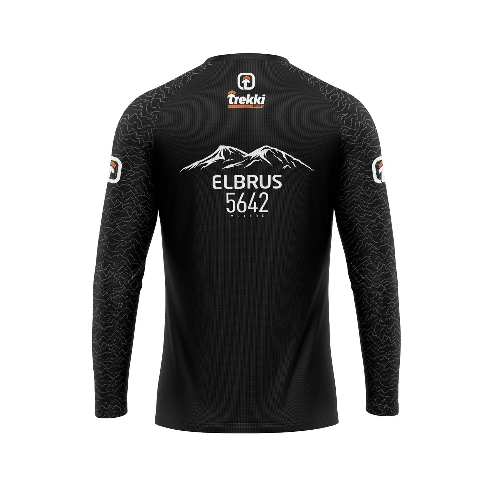
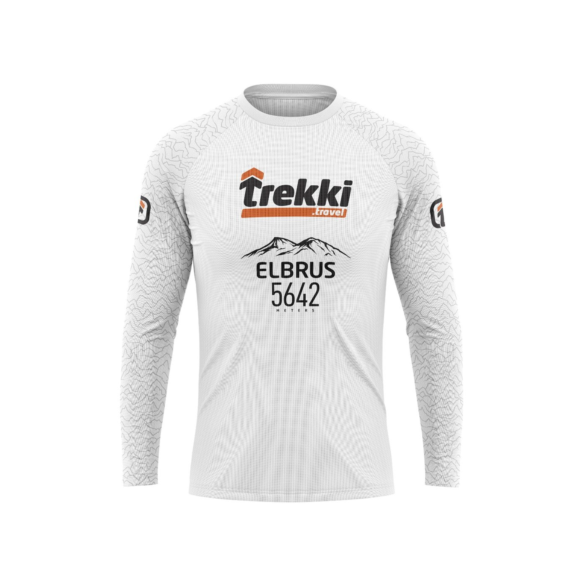

Лёгкий слой
Для забегов, тренировок и стартов, где важны влагоотведение, посадка и узнаваемость команды.
Длинный рукав для прохлады, солнца, ветра и активного движения. Подходит для беговых клубов, походных групп, стартов, корпоративных команд и сообществ.
Лонгслив можно сделать спокойным или ярким: логотип, название маршрута, номер вершины, графика события и дополнительные отметки на рукавах.



Лонгслив хорош, когда обычной футболки мало: нужна защита рук, единый образ команды и ткань, которая не мешает двигаться.
Для забегов, тренировок и стартов, где важны влагоотведение, посадка и узнаваемость команды.
Длинный рукав закрывает руки от солнца, ветра и контакта с рюкзаком, не превращаясь в тяжёлую кофту.
Можно собрать единый принт, логотипы, номера, названия маршрута или события.
Чем понятнее вводные, тем быстрее можно предложить ткань, принт, цену и сроки.
| Вопрос | Зачем нужен | Что прислать |
|---|---|---|
| Тираж | От него зависят расчёт, сроки и вариант изготовления. | Минимально работаем от 5 штук, можно указать вилку. |
| Сценарий носки | Под него выбираем ткань: бег, жара, поход, команда, мероприятие. | Опишите, где и как будут носить лонгсливы. |
| Дизайн | Нужно понять, что уже есть и что надо подготовить. | Логотип в векторе, референсы, старый мерч или описание идеи. |
| Размеры | Посадка зависит от ткани и желаемой свободы движения. | Откройте размерную сетку лонгсливов, выберите размеры по A, B и рукаву или пришлите примерную сетку команды. |
Напишите тираж, сроки, город доставки и что уже есть по дизайну. Дальше предложим ткань и способ для принта.